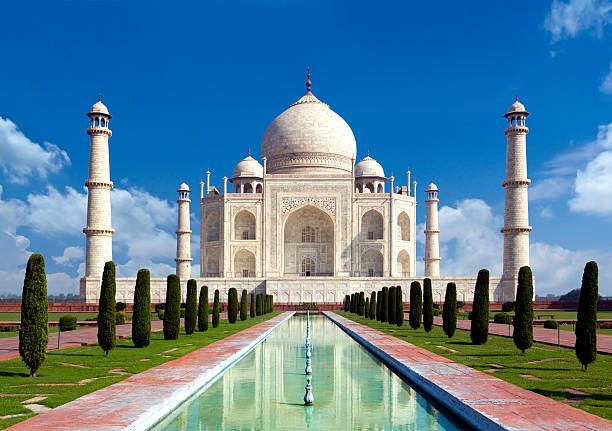
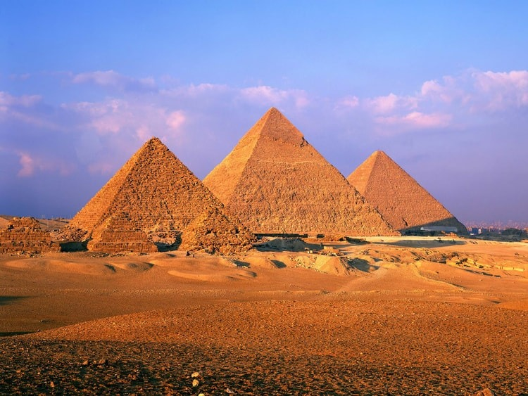
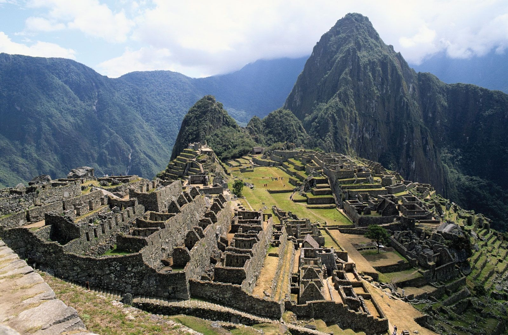
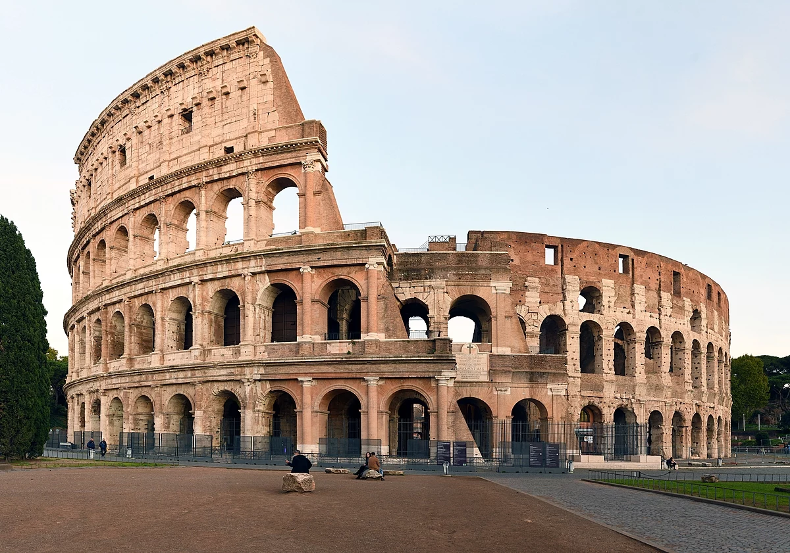
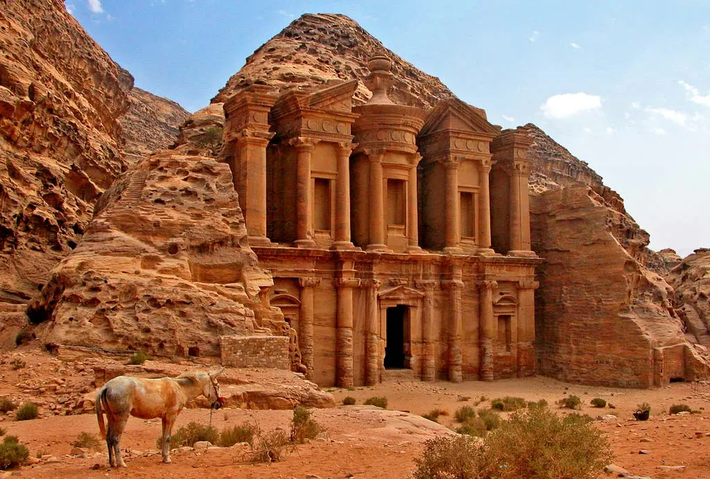
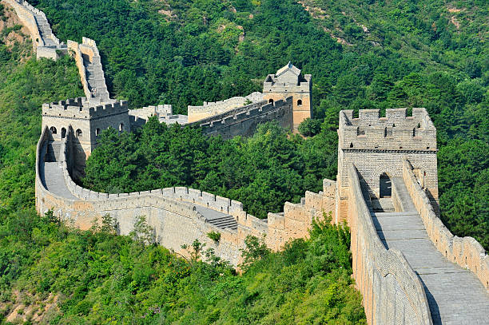
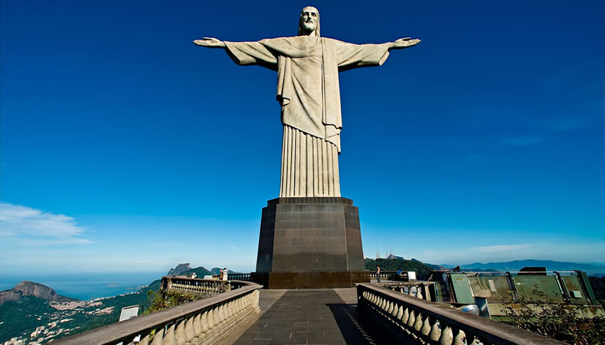
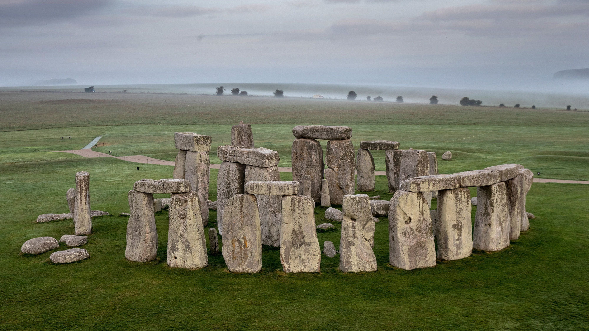
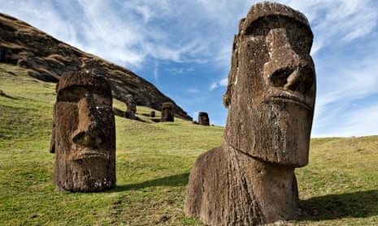
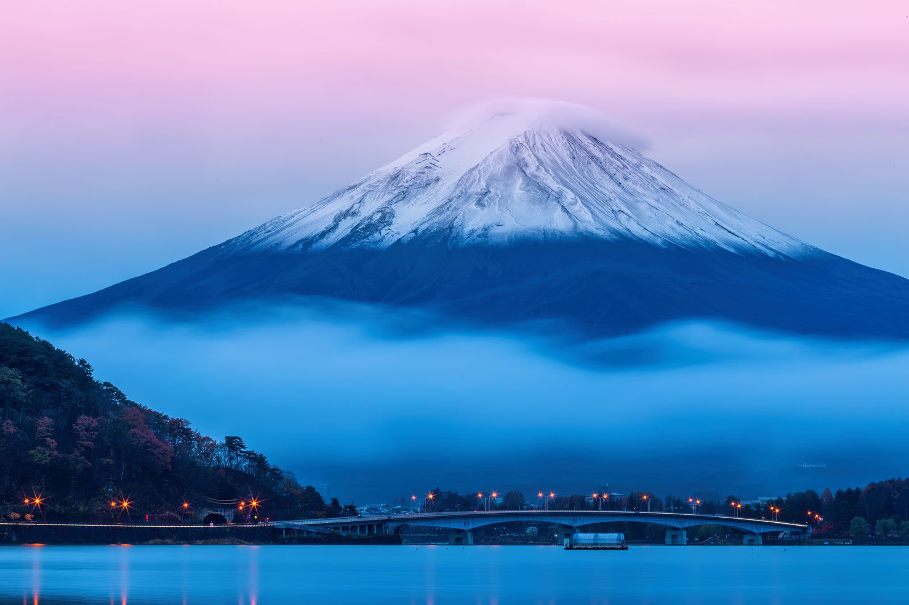

historical monuments
Our Monuments Gallery
For decades, we have celebrated the beauty and history of monuments from every zone. Our gallery showcases architectural and cultural treasures that tell the story of human civilization. Each image represents a unique place, capturing its heritage and significance.
A Journey Through History

Taj Mahal (India)
A magnificent white marble mausoleum built by Mughal emperor Shah Jahan in memory of his wife Mumtaz Mahal. It is renowned worldwide for its stunning symmetry, intricate carvings, and beautifully landscaped gardens, symbolizing eternal love and architectural brilliance.

Pyramids of Giza (Egypt)
Pyramids of Giza are ancient monuments that have stood for over 4,500 years. Built as royal tombs, these iconic structures reflect the advanced engineering and spiritual beliefs of ancient Egyptian civilization, remaining a testament to human ingenuity.

Machu Picchu (Peru)
Perched high in the Andes mountains, Machu Picchu is a remarkable Incan city. Its stone terraces, temples, and panoramic views showcase the ingenuity of Incan architecture and its seamless integration with the natural landscape.

Colosseum (Italy)
The Colosseum in Rome is an iconic symbol of the Roman Empire. This massive amphitheater hosted gladiatorial games and public spectacles, reflecting the grandeur, engineering prowess, and cultural life of ancient Rome.

Petra (Jordan)
Carved into pink sandstone cliffs, Petra is an archaeological wonder of the Nabataean civilization. Its rock-cut facades, tombs, and temples demonstrate exceptional craftsmanship and a rich history of trade and culture in the ancient Middle East.

Great Wall of China
The Great Wall stretches over thousands of miles, built to protect China from invasions. A marvel of ancient engineering, it winds across mountains and valleys, illustrating the determination, organization, and strategic thinking of Chinese dynasties.

Angkor Wat (Cambodia)
Angkor Wat, originally a Hindu temple and later a Buddhist site, is the largest religious monument in the world. Its intricate bas-reliefs, towering spires, and expansive courtyards celebrate Khmer art, culture, and devotion.

Christ the Redeemer (Brazil)
Standing atop Corcovado Mountain, this iconic statue of Jesus Christ overlooks Rio de Janeiro. It symbolizes peace, welcoming, and faith, and has become one of the most recognized landmarks in South America and the world.

Stonehenge (United Kingdom)
Stonehenge is a prehistoric monument consisting of massive standing stones arranged in a circular formation. Its purpose remains a mystery, but it reflects sophisticated understanding of astronomy

Borobudur Temple (Indonesia)
Borobudur is the world’s largest Buddhist temple, built in the 9th century. This pyramid-shaped monument is covered with thousands of stone carvings and Buddha statues, representing ancient Indonesian art,

Moai Statues (Easter Island, Chile)
Moai statues are colossal stone figures carved by the Rapa Nui people. These statues, with their distinct facial features, represent ancestors and cultural heritage, demonstrating remarkable

Mount Fuji (Japan)
Mount Fuji is Japan’s tallest peak and a revered cultural icon. Its symmetrical volcanic cone has inspired art, literature, and pilgrimage for centuries, symbolizing beauty, spiritual significance, and the harmony between nature